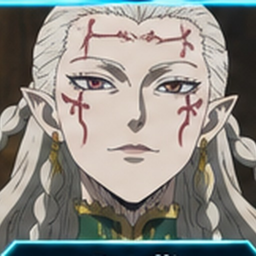

01 · Identity & Background
History and background
Patolli is an elf whose soul is reincarnated in William Vangeance's body. Believing the humans responsible for the massacre of the elf tribe, he leads the Eye of the Midnight Sun and acts under the identity of Licht. The truth is that Zagred manipulated the ancient tragedy and the elves' memories. Patolli's story becomes a major examination of grief, revenge and historical deception.
02 · Personality & Psychology
Patolli is initially consumed by anger and a desire for revenge. He is devoted to his people and sees himself as restoring justice, but his certainty is built on manipulated history. Learning the truth forces him to confront his actions and seek a different path.
Character-reading note: This describes traits demonstrated in the narrative; it does not assign a clinical diagnosis.
03 · Magic, Abilities & Equipment
Light Magic is exceptionally fast and versatile, enabling beams, blades, movement and large-scale attacks. Patolli's magic is distinct from William's World Tree Magic even though they share a body for part of the story.
Evaluation dimensions
- Attribute and source: separate innate magic from spirit, devil, contract, reincarnation or external power.
- Technique: record range, precision, area coverage, defensive utility and combinations.
- Resources: mana, stamina, preparation, grimoire development and transformation conditions.
- Limitations: retain demonstrated costs, counters and activation requirements; do not assume unlimited power.
04 · Relationships & Affiliations
William is his human host. Licht is the elf leader whose identity Patolli assumes. Zagred is the devil who manipulates the elves. The reincarnated elves are his people and followers.
Family, friendship, rivalry, mentorship, squad membership, political allegiance and romantic interest are distinct relationship types. Shared affiliation does not automatically establish friendship.
05 · Story Chronology & Development
His actions drive the Eye of the Midnight Sun conflict and the elf reincarnation arc. After the truth is revealed, he turns against Zagred and helps resolve the crisis.
Flashbacks, reincarnation memories and later revelations are placed in the character's personal chronology and not mistaken for present-day events.
06 · Achievements, Battles & Contributions
His leadership and powerful Light Magic make him a central antagonist-turned-ally. His change of allegiance follows the revelation of the truth rather than a simple personality shift.
Combat record format
- Opponent and conflict context.
- Victory, defeat, retreat, interruption or team outcome.
- Support, preparation and transformations involved.
- What the encounter demonstrates about capabilities and limitations.
Battle outcomes should not be converted into a universal numerical tier without accounting for matchup and assistance.
07 · Current Status & Continuity
Official directory romanizes his name as Patry in English sources. This page uses Patolli as the repository filename's name; preserve consistent naming across the archive.
Anime coverage and manga-confirmed material are distinguished. Exact dates, ages, ranks, spell names or outcomes not established by reliable sources are left unspecified rather than guessed.
08 · References & Verification
- Official Black Clover character directory.
- Official character directory and squad listings.
- VIZ — Black Clover.
- MANGA Plus — Black Clover.
Editorial reference page, not an official publication. Canon statements should be checked against manga chapters and official character materials; interpretation is labelled as such.